Universum · 宇宙
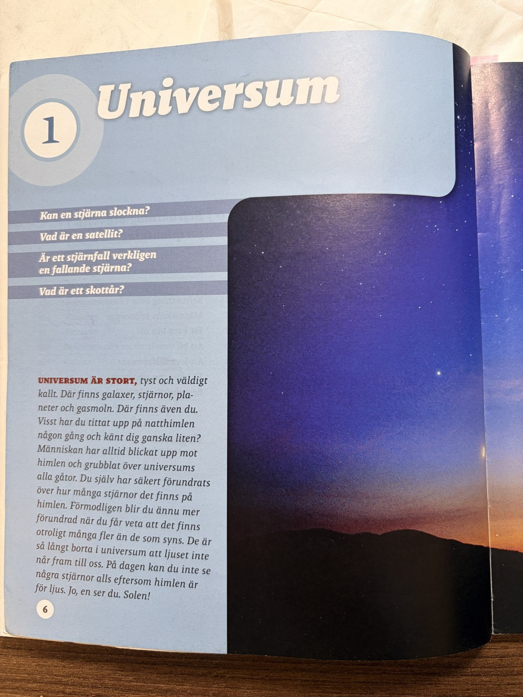
🇨🇳 宇宙
宇宙辽阔、寂静，而且十分寒冷。那里有星系、恒星、行星和气体云，也有我们。人类一直仰望天空，思考宇宙的奥秘。你看到的星星很多，但还有更多遥远的星星无法用肉眼看见。白天天空太亮，通常看不到其他恒星，但我们能看到太阳——它也是恒星。
本章提出四个问题：恒星会熄灭吗？什么是卫星？流星真的是掉下来的星星吗？什么是闰年？
第一单元 · 瑞典语学习与复习 · 课本第6–27页
先读课本原文，用中文对照理解，再学习概念，最后独立回答第27页的6道原题。
① 光年是距离单位。② 四季与地轴倾斜有关。③ 月亮反射太阳光；月相与我们看到的受光部分有关。
保留全部22页原文照片。下方中文按各页内容分段整理，帮助理解；少量科学术语补充已融入说明，不是逐字译文。点击照片可单独放大阅读。

宇宙辽阔、寂静，而且十分寒冷。那里有星系、恒星、行星和气体云，也有我们。人类一直仰望天空，思考宇宙的奥秘。你看到的星星很多，但还有更多遥远的星星无法用肉眼看见。白天天空太亮，通常看不到其他恒星，但我们能看到太阳——它也是恒星。
本章提出四个问题：恒星会熄灭吗？什么是卫星？流星真的是掉下来的星星吗？什么是闰年？
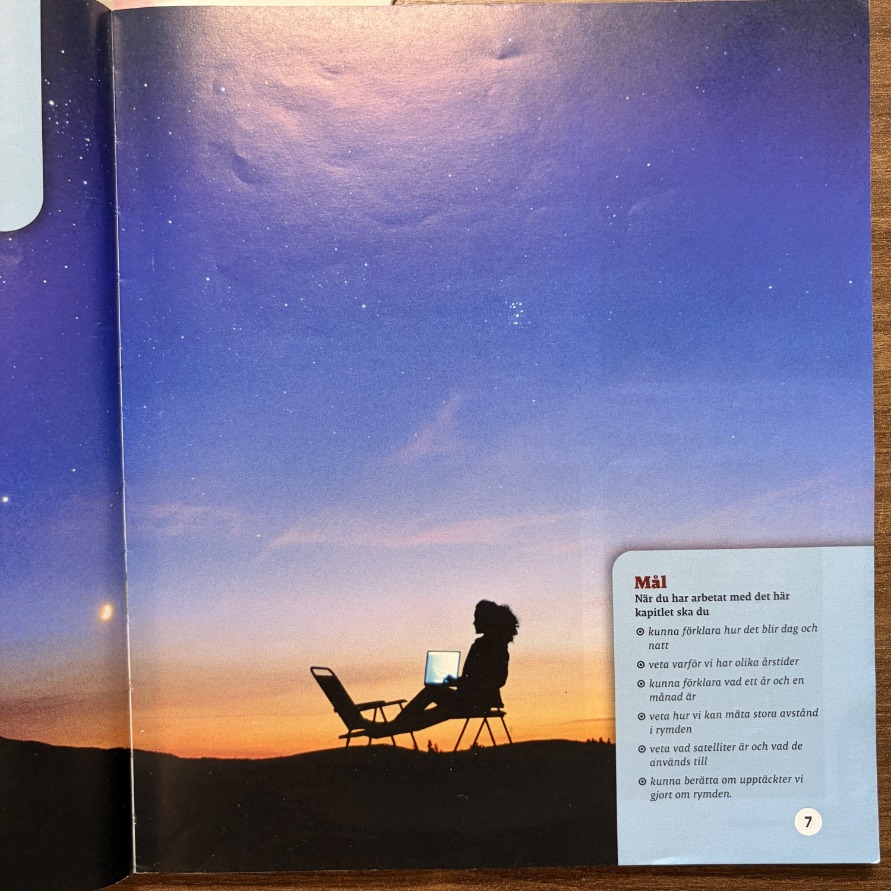
学完本章，你应该能够：解释昼夜怎样形成；说明为什么有不同的季节；解释一年和一个月的含义；知道怎样表示太空中的巨大距离；说明卫星是什么、有什么用途；介绍人类对宇宙的一些发现。
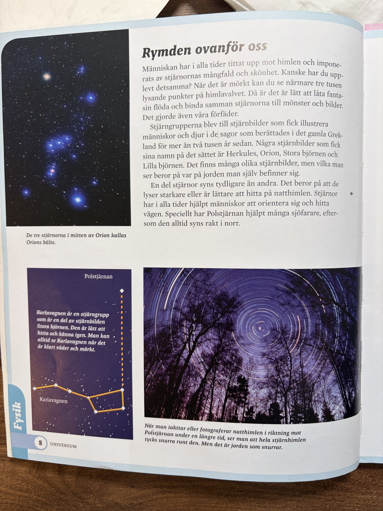
人类自古以来就被繁多而美丽的星星吸引。在黑暗的环境中，人们能看到接近三千个亮点，并想象出星星组成的图案。古希腊人用神话中的人物和动物给星座命名，例如武仙座、猎户座、大熊座和小熊座。能看到哪些星座，取决于观察者在地球上的位置。
有些星星更明亮，或者在夜空中更容易辨认。星星曾帮助人们辨别方向，尤其是北极星：在北半球，它指示北方。猎户座中间的三颗星称为猎户腰带；北斗七星是大熊座的一部分。
长时间朝北极星方向观察或拍摄，星空仿佛围绕它转动，其实是地球在自转。图中用北斗七星帮助寻找北极星。
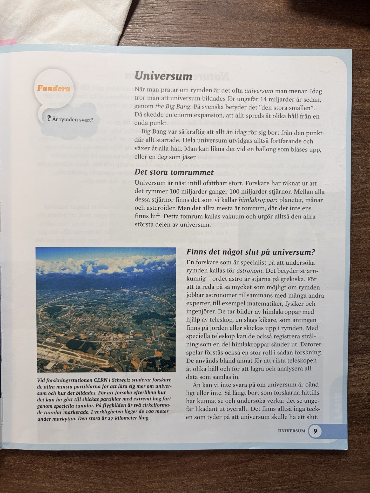
人们谈论太空时，往往指整个宇宙。课本用约140亿年前的“大爆炸”描述宇宙的早期演化，并用吹大的气球或发酵面团来比喻宇宙膨胀。宇宙至今仍在膨胀。
宇宙极其辽阔，包含无数恒星、行星、月球和小行星。大部分空间十分空旷，几乎没有空气，这种环境称为真空。书中给出的恒星总数是帮助理解规模的估计，不应当作精确计数。
专门研究宇宙的科学家叫天文学家（astronom）。他们与数学家、物理学家、工程师合作，使用地面或太空望远镜拍摄天体、测量辐射，并用电脑控制仪器、保存和分析数据。课本说明：我们还不能确定整个宇宙是否无限大。
图片介绍位于瑞士的欧洲核子研究中心 CERN：研究人员让微小粒子高速运动，研究物质与宇宙早期的情况。图中大环形隧道长27千米，位于地下。
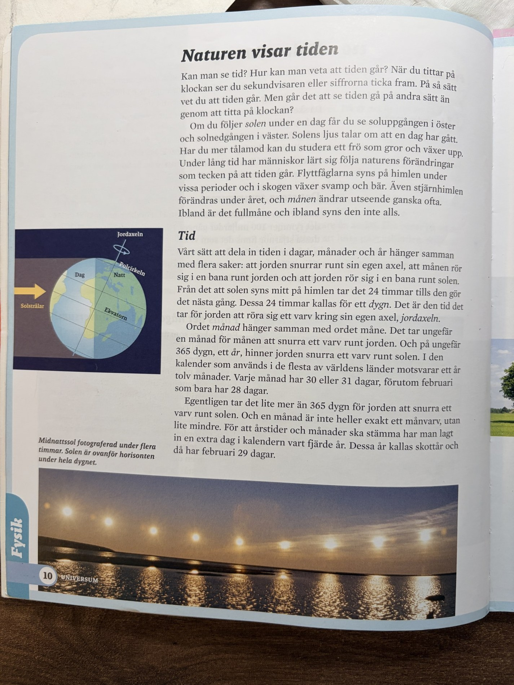
时间不仅能通过钟表观察，也能从自然变化中感受：太阳东升西落、种子发芽生长、候鸟迁徙、蘑菇和浆果出现、星空随季节变化，以及月亮形状改变。
一天、一个月和一年与三种运动有关：地球绕地轴自转，月球绕地球公转，地球绕太阳公转。一个昼夜约24小时；月球绕地球一周约一个月；地球绕太阳一周约一年，即约365天。
日历中一年有12个月。除二月外，每月有30或31天，二月通常28天。由于地球公转周期略长于365天，日历需要加入额外的一天。课本以“通常每四年一次”解释闰年，闰年的二月有29天。
图示词语：jordaxeln 地轴，ekvatorn 赤道，polcirkeln 极圈，solstrålar 太阳光线，dag 白昼，natt 黑夜。下图展示午夜太阳：太阳整天都在地平线上方。
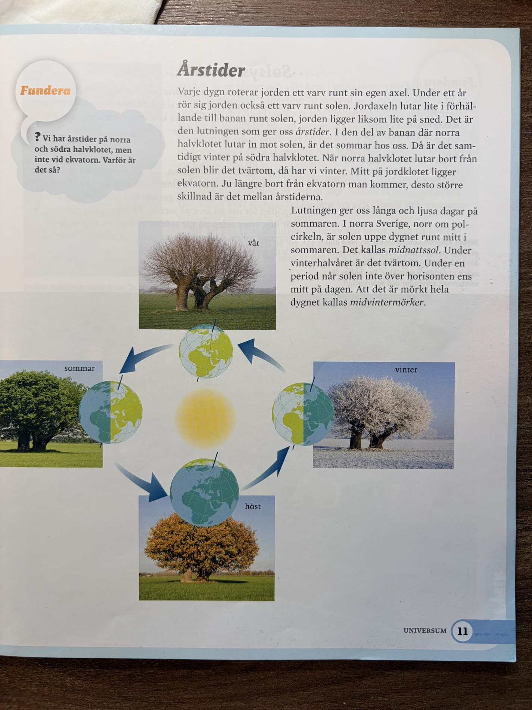
地球每天自转一周，每年绕太阳公转一周。地轴相对于公转轨道是倾斜的，这种倾斜造成季节变化。北半球向太阳倾斜时，我们这里是夏季，南半球则是冬季；北半球背向太阳倾斜时，情况相反。
赤道位于地球中部。通常离赤道越远，季节间的日照与温度变化越明显。这里的“四季”主要指温带地区的春夏秋冬。
地轴倾斜也使夏天白昼较长。在瑞典北部、北极圈以北，盛夏有一段时间太阳整天不落下，称为午夜太阳或极昼（midnattssol）。冬季则有一段时间太阳整天不升起，称为极夜（midvintermörker）。
图示春 vår、夏 sommar、秋 höst、冬 vinter。理解重点：季节由地轴倾斜与地球公转共同造成。
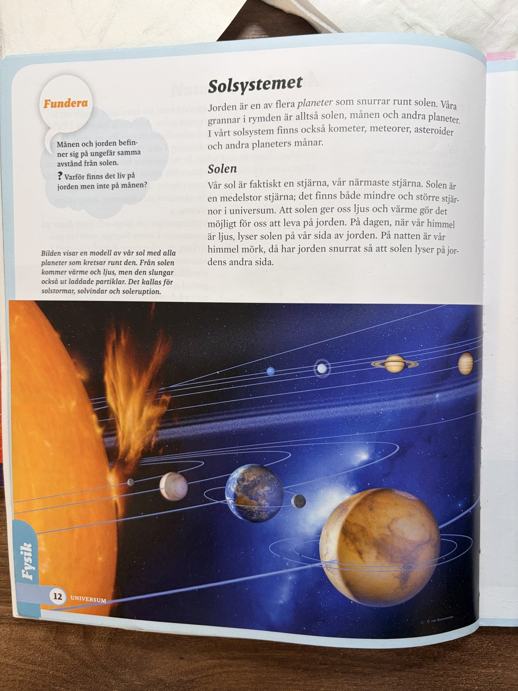
地球是围绕太阳运行的行星之一。太阳系还包括月球、其他行星及其卫星、彗星、流星相关的小天体和小行星。
太阳是一颗恒星，也是离地球最近的恒星。太阳为地球提供光和热，使这里具备生命生存的重要条件。当地球的某一面朝向太阳时，那里是白天；地球自转使这一面背向太阳后，那里就是夜晚。
太阳系示意图展示行星的轨道；图中大小和距离不按同一比例绘制。太阳除了发出光和热，还会释放带电粒子，课本提到太阳风、太阳风暴和太阳喷发现象。
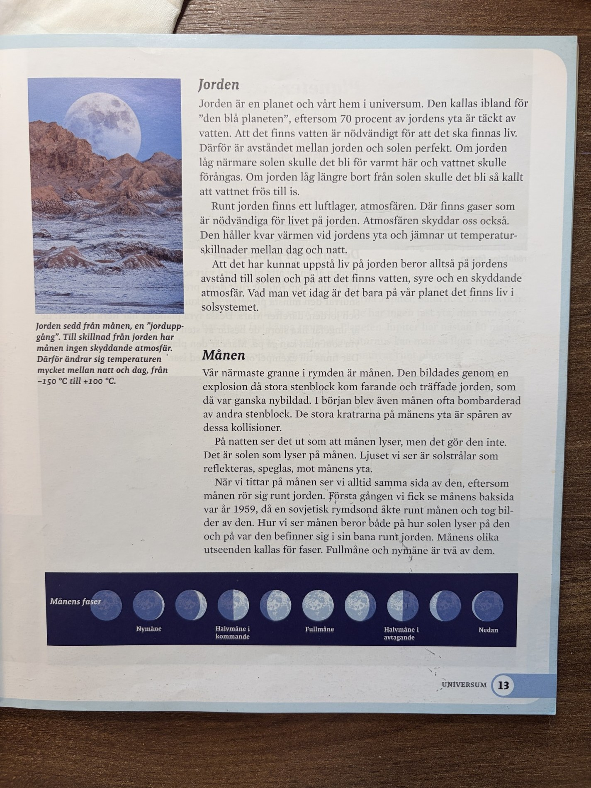
地球是我们在宇宙中的家，常被称为“蓝色星球”，因为约70%的表面被水覆盖。与太阳的距离、大气和水等条件共同影响地球温度与生命环境。大气层包含生命所需的气体，也能保留部分热量、缓和昼夜温差。
月球是离地球最近的天然卫星。课本把它的形成与早期地球遭受巨大撞击联系起来；月面上许多陨石坑也是撞击留下的痕迹。月球没有像地球这样的大气保护，昼夜温差很大。
月球本身不发光，我们看到的是月面反射的太阳光。从地球看，月球总是大致以同一面朝向我们。1959年，苏联探测器拍到了月球背面的照片。
我们看到的月亮形状，取决于太阳、地球、月球的相对位置，以及月球被照亮的一面有多少朝向地球。这些形状称为月相，包括新月、上弦、满月和下弦等。月相不是地球阴影遮挡造成的；地球阴影遮挡月球属于月食。
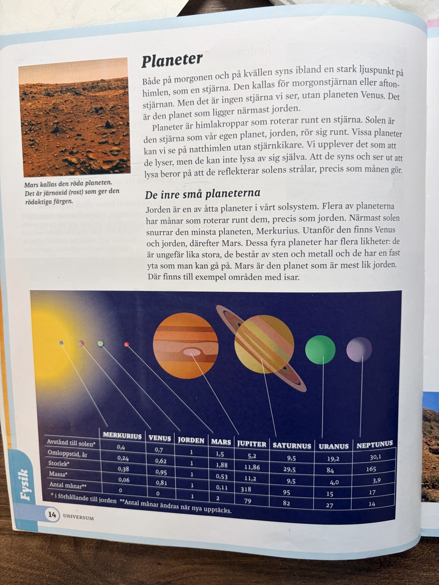
清晨或傍晚看到的明亮“星点”，有时是金星，俗称启明星或长庚星。它是一颗行星，不是恒星。
行星围绕恒星运行。它们看起来会“发光”，其实主要是反射太阳光，和月球一样。太阳系有八颗行星，有些行星拥有自己的卫星。
从太阳向外，前四颗行星是水星 Merkurius、金星 Venus、地球 Jorden、火星 Mars。它们主要由岩石和金属构成，具有固体表面。火星上的氧化铁使表面呈红色，那里还有冰。
八大行星顺序：水、金、地、火、木、土、天、海。表格比较与太阳的相对距离、公转周期、相对大小、质量和卫星数量；地球作为部分项目的比较基准（1）。卫星数量会随着新发现而变化，表中为课本编写时的数据。
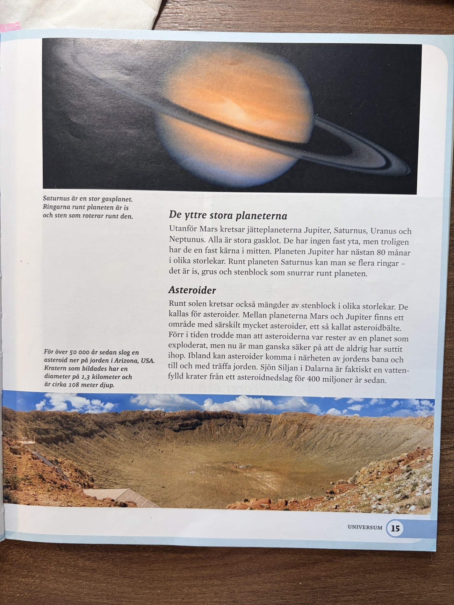
火星轨道外依次是木星 Jupiter、土星 Saturnus、天王星 Uranus 和海王星 Neptunus。它们比内侧四颗行星大，没有像地球那样可站立的固体表面。课本把它们统称为巨大气体球；学习时也可区分木土两颗气态巨行星与天海两颗冰巨行星。
土星环由绕土星运动的大量冰块、碎石等组成。课本所写的木星卫星数量是当时的统计，不作为本页练习的记忆目标。
小行星是围绕太阳运行的较小天体，多由岩石等构成。火星和木星之间有小行星特别密集的区域，称为小行星带。课本说明，它们并不是一颗爆炸行星的碎片。
小行星可能撞击地球，形成撞击坑。课本举例：瑞典达拉纳的 Siljan 地区与古老撞击有关；美国亚利桑那州也有明显撞击坑。图注给出亚利桑那撞击坑约1.3千米宽、约108米深。
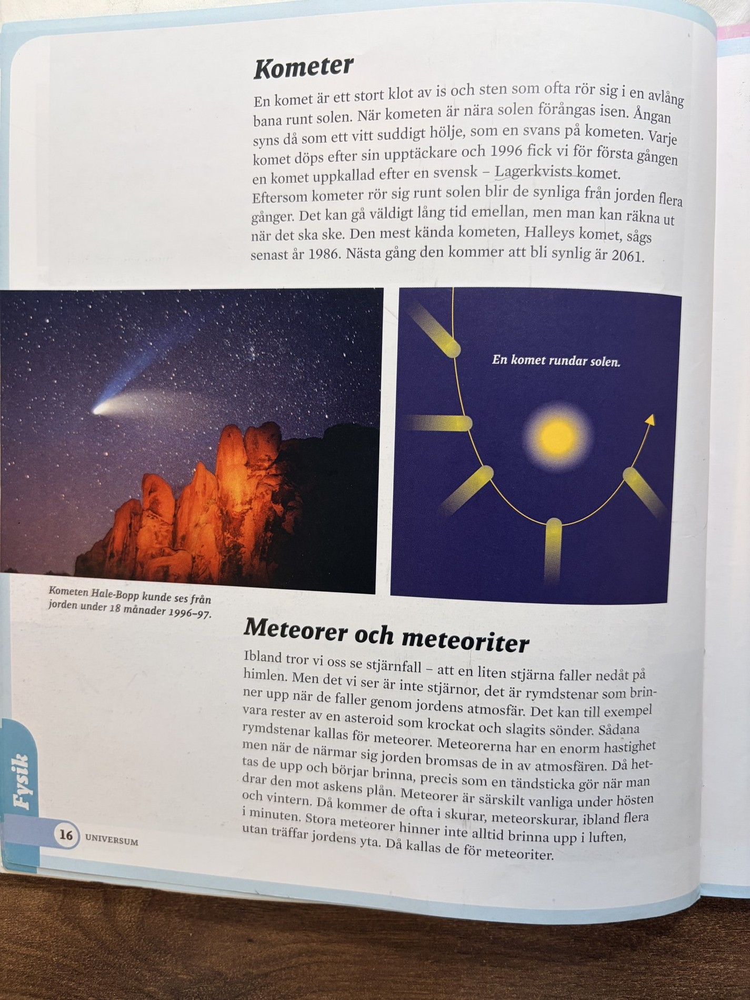
彗星主要由冰、尘埃和岩石组成，常沿细长的轨道绕太阳运行。接近太阳时，冰受热释放气体和尘埃，形成朦胧的彗发和彗尾。图中显示彗尾大致背向太阳。
周期彗星会再次来到太阳附近。课本以哈雷彗星为例：上一次回归是1986年，下一次预计2061年。图片展示1996—1997年间的海尔—波普彗星。
流星不是恒星掉下来，而是小天体高速进入地球大气时产生的发光现象。大气会使它们减速并强烈受热；有时许多流星接连出现，形成流星雨。
如果有碎块没有在大气中完全烧蚀，并落到地面，就称为陨石（meteorit）。区分：meteor 流星（发光现象）；meteorit 陨石（落到地面的物体）。
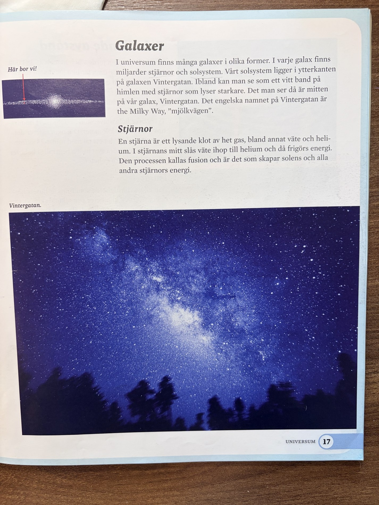
宇宙中有许多形状不同的星系。一个星系可以包含数十亿颗恒星及许多行星系统。我们的太阳系位于银河系（Vintergatan）中，远离银心。
有时夜空中能看到一条浅白色的光带，那是我们从银河系内部向恒星密集方向望去看到的银河。Vintergatan 的英文名称是 the Milky Way，意为“乳之路”。
恒星是炽热、发光的气体球，主要含氢和氦。在恒星核心，氢通过核聚变形成氦并释放能量。核聚变（fusion）为太阳和其他恒星提供能量。
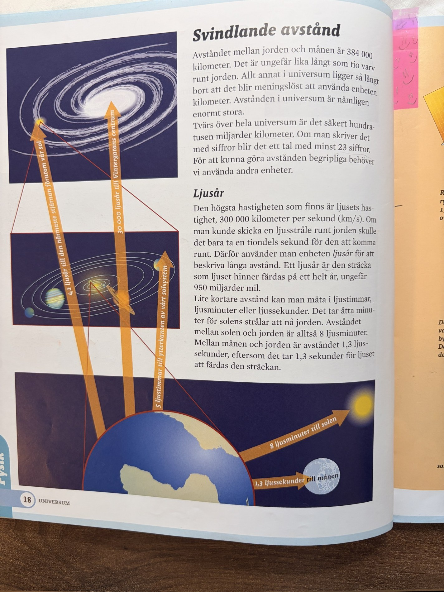
地球与月球相距约384000千米，大约相当于绕地球十圈。更遥远的天体之间距离太大，用千米表示往往会出现很长的数字，因此需要其他单位。
光在真空中每秒约传播300000千米。光年（ljusår）是光在一年中传播的距离，是长度单位。书中“950 miljarder mil”约等于9.5万亿千米，因为瑞典语1 mil＝10千米。
还可以使用光时、光分和光秒。太阳光约需8分钟到达地球，因此日地距离约为8光分；月地距离约为1.3光秒。
图示还用约5光时表示太阳系外缘的示意尺度，用约4.2光年表示太阳之外最近恒星的距离，用约30000光年表示到银心的距离。这些都是教材中的近似或示意值，不表示整个宇宙的大小已被精确测定。
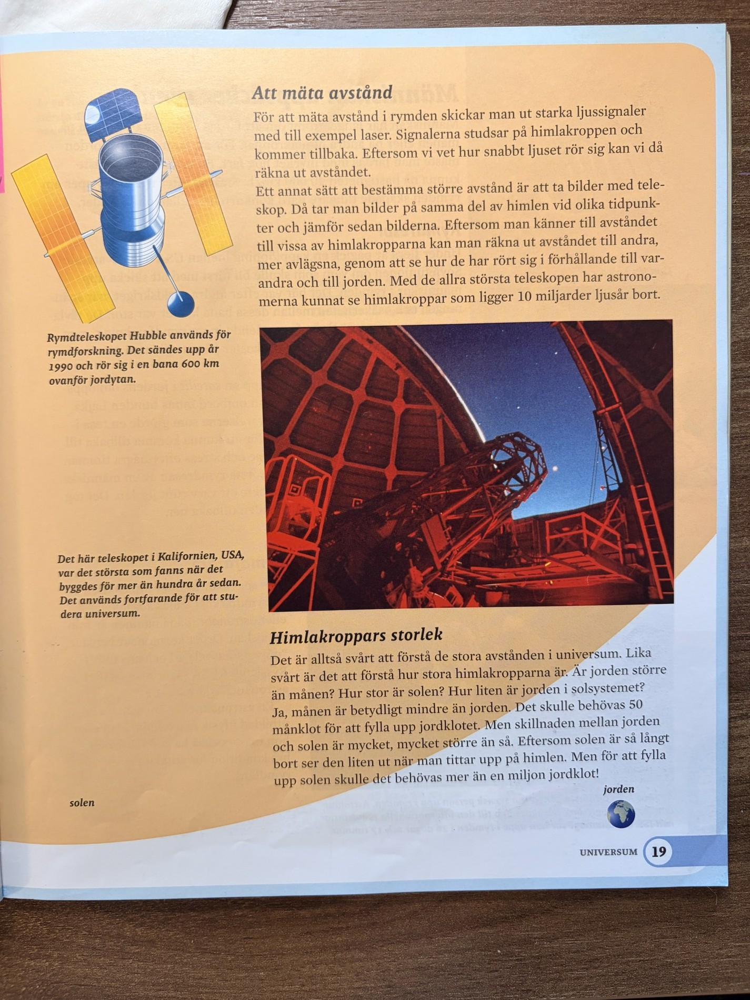
测量一些较近天体的距离，可以发出激光等信号，记录反射信号返回所需的时间。知道光速，就能计算距离；因为测量的是往返时间，单程距离＝光速×往返时间÷2。
研究更远天体时，天文学家会在不同时间拍摄同一片星空，比较天体相对位置的变化，并结合已知信息计算距离。望远镜与电脑帮助完成这些观测。
图中的哈勃太空望远镜于1990年发射。另一张照片展示美国加利福尼亚州的大型地面望远镜。图注里的高度和“最远观测”等数字属于教材描述，不是实时纪录。
月球远小于地球：按体积比较，地球大约能容纳50个月球。太阳比地球大得更多，能容纳一百多万个地球。太阳在天空中看起来不大，是因为它离我们很远。
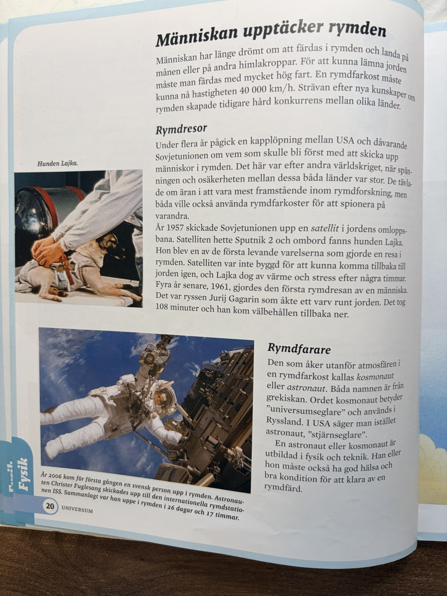
人类很早就梦想进入太空、登上月球和其他天体。航天器必须达到很高的速度。课本以约40000千米/小时说明离开地球所需速度的量级；这不能理解为所有航天任务都采用同一速度。
第二次世界大战后，美国与当时的苏联展开太空竞赛，既为了科学、荣誉，也涉及军事与侦察。1957年，苏联发射斯普特尼克2号，搭载小狗莱卡。飞船不能安全返回，莱卡在几小时后因高温和应激死亡。
1961年，尤里·加加林成为第一位进入太空的人，绕地球飞行一周，用时约108分钟后安全返回。
宇航员可称 astronaut 或 kosmonaut。两词都来自希腊语；前者有“星际航行者”的含义，后者有“宇宙航行者”的含义。宇航员需要物理、技术知识和良好的身体条件。
图注介绍瑞典宇航员 Christer Fuglesang：2006年首次进入太空，前往国际空间站 ISS；课本还列出了他的累计太空飞行时间。
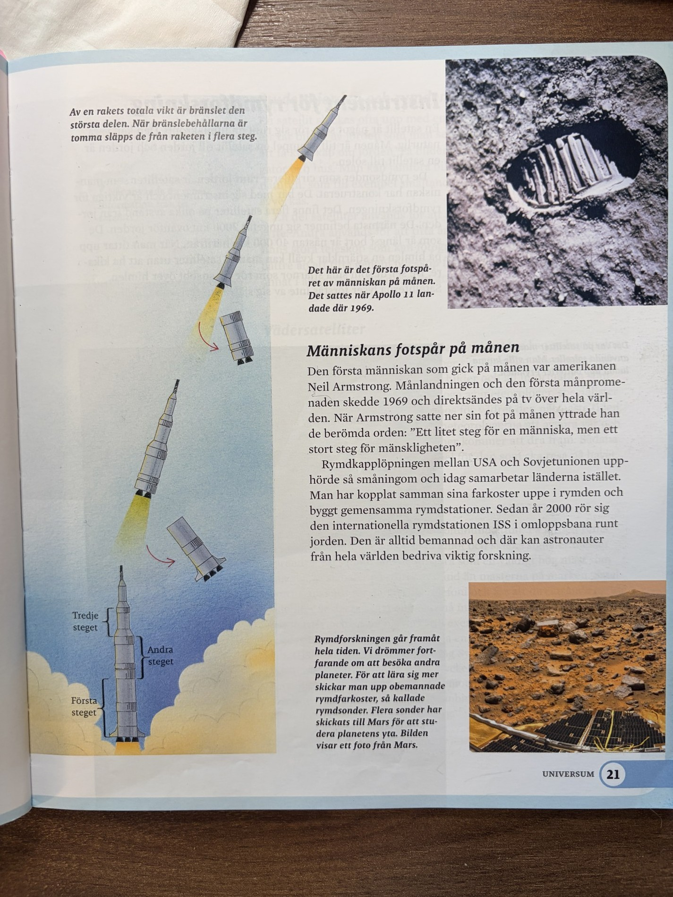
1969年，阿波罗11号实现载人登月。美国宇航员尼尔·阿姆斯特朗成为第一位踏上月球的人。他的话表达了：个人迈出的一小步，是全人类迈出的一大步。
太空探索后来也发展出国际合作，国家之间连接航天器、共同建设空间站。国际空间站 ISS 围绕地球运行，宇航员在那里开展研究。课本提到从2000年起持续有人驻留。
多级火箭示意图：燃料占火箭质量的很大部分，燃料用完后，部分级段会分离，使剩余部分更轻。
无人太空探测器（rymdsond）被送往其他天体，拍摄和测量。下图是火星表面的照片，帮助人们了解那里的环境。
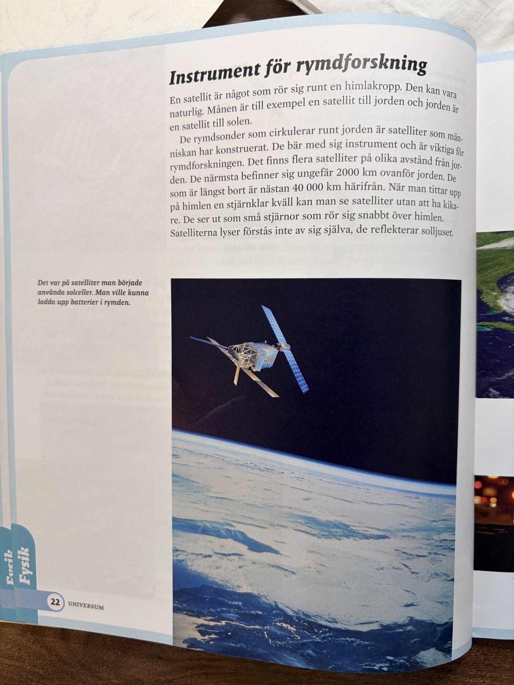
卫星是围绕天体运行的物体，可以是天然的，也可以是人造的。月球是地球的天然卫星；人造卫星则由人类制造并送入轨道。
人造卫星携带仪器，用于太空研究等任务，不同任务采用不同轨道。晴朗夜晚，有些卫星能用肉眼看见，像在星空中移动的小亮点。它们主要反射太阳光，本身不是恒星。
卫星上的太阳能电池将阳光转化为电能，为仪器供电并给电池充电。课本中的轨道高度范围是简化示例，不代表所有卫星的高度上下限。
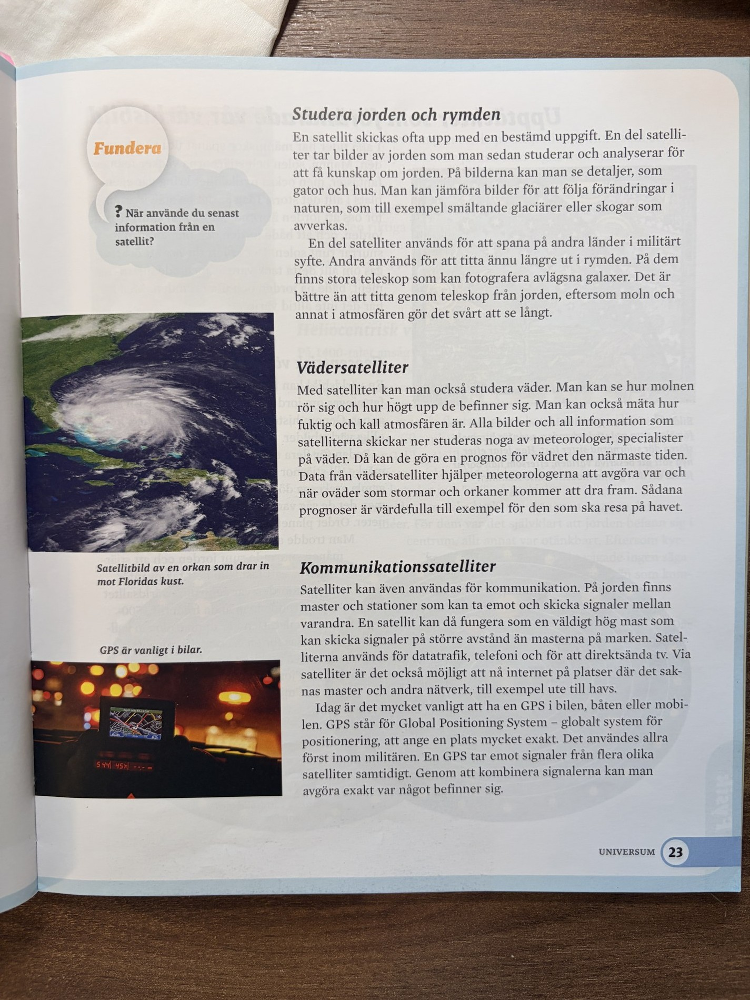
有些卫星拍摄地球。比较不同时期的图像，可以研究冰川融化、森林砍伐等变化；也可用于侦察。另一些卫星携带望远镜，拍摄遥远星系，避开云层和部分大气影响。
气象卫星观察云层的移动与高度，测量大气温度、湿度等。气象学家分析这些数据，制作天气预报，预测风暴和飓风等危险天气，对海上航行也很重要。
通信卫星像太空中的高处转发站，帮助传输电话、电视、数据和互联网信号，也能为海上等地面网络不便覆盖的地方提供通信。
GPS 是 Global Positioning System，即全球定位系统。接收器同时接收多颗导航卫星的信号，计算位置。汽车、船和手机都可使用。GPS定位卫星与通信转发卫星的具体任务不同。
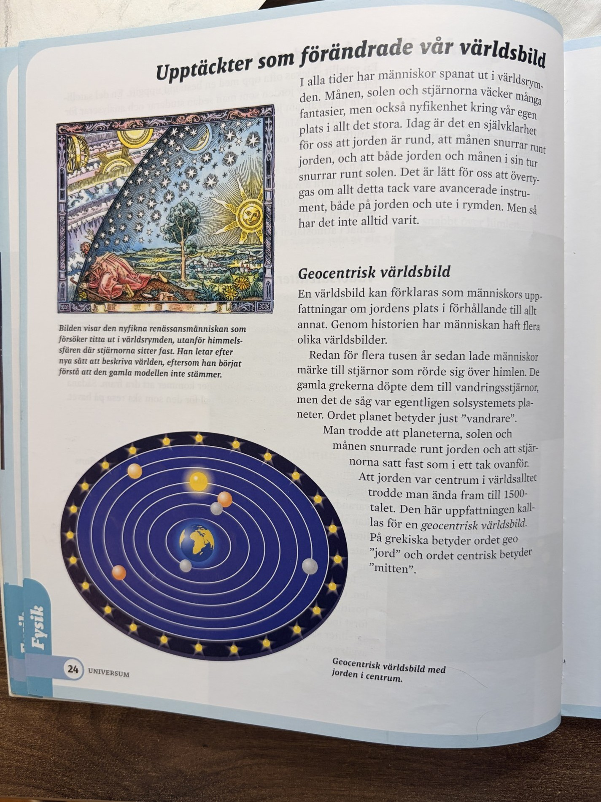
人类一直观察月亮、太阳和星星，思考地球在宇宙中的位置。借助地面和太空的仪器，我们知道地球近似球形，月球绕地球运行，地球绕太阳运行，但这些认识不是一开始就被普遍接受。
世界图景或宇宙观（världsbild），指人们对地球与其他天体关系的理解。古希腊人看到一些“星点”在天空中改变位置，称它们为游走的星；其实那是行星，planet 一词就有“游走者”的含义。
地心说认为地球处于中心，太阳、月亮、行星都围绕地球运行，恒星像固定在外层天幕上。geo 在希腊语中表示“地”，centrisk 与“中心”有关。
左图表现人类试图走出旧有的天幕模型，寻找新的解释。下面的图是以地球为中心的历史模型。
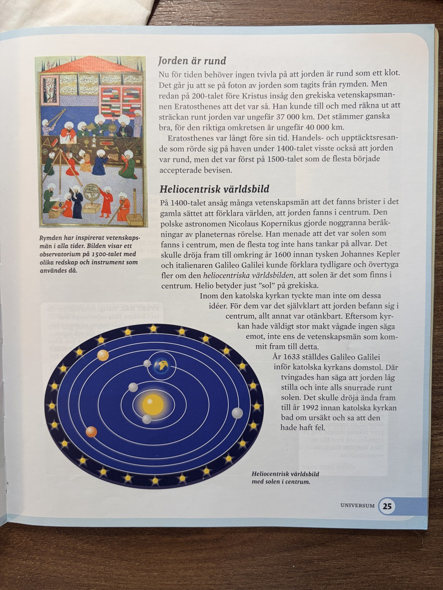
如今可以从太空照片看出地球近似球形。早在公元前3世纪，希腊学者埃拉托色尼就计算过地球周长。课本给出他的结果约37000千米，并与实际约40000千米作比较。
波兰天文学家哥白尼研究行星运动，提出以太阳为中心的模型。后来，开普勒与伽利略等人的工作推动了日心说的接受。helio 在希腊语中表示“太阳”。
日心说描述地球和其他行星围绕太阳运行。它与地心说的区别在于太阳和地球的角色；学习时要注意，太阳是太阳系的中心天体，并不是整个宇宙的中心。
课本还讲述当时教会对日心说的反对：1633年伽利略受审，被迫否认地球绕太阳运行；书中用1992年教会承认处理有误来说明科学认识与社会权威之间的历史冲突。
图中分别展示早期天文观测工具与日心模型。
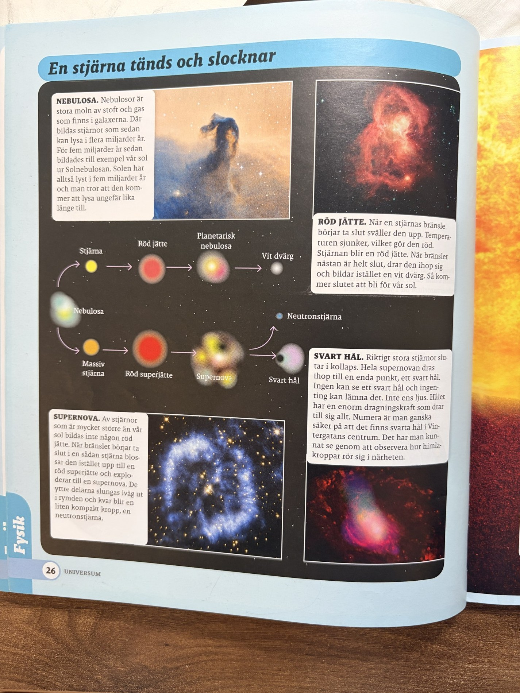
星云（nebulosa）是星际气体和尘埃云，新恒星可以在其中形成。恒星形成后可以发光数十亿年。课本用“约50亿年”描述太阳已经存在的时间，并说明它还可继续稳定发光很长时间。
像太阳这样的恒星，晚年会膨胀为红巨星（röd jätte），外层温度降低、颜色变红。之后外层物质散开，形成行星状星云，留下高温致密的白矮星（vit dvärg），白矮星以后逐渐冷却。
质量更大的恒星可成为红超巨星（röd superjätte），之后发生超新星（supernova）爆发，外层物质抛向太空。核心残骸可形成中子星（neutronstjärna），某些更大质量恒星的核心坍缩后会形成黑洞（svart hål）。
黑洞具有很强的引力，在其事件视界以内，连光也无法逃出。研究者可以通过附近天体的运动及周围物质的辐射等研究它。学习要点：太阳不会以超新星爆发结束，也不会变成黑洞。
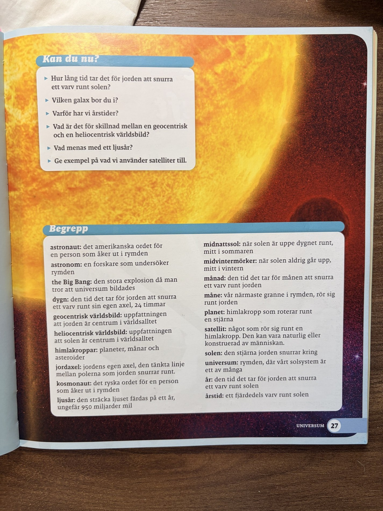
六道课本自测题：①地球绕太阳一周要多久？②你住在哪个星系？③为什么有季节？④地心说与日心说有什么不同？⑤什么是光年？⑥举例说明卫星的用途。网页“课本复习题”中的前六题对应这里的原题。
概念表包括：astronaut 宇航员，astronom 天文学家，the Big Bang 大爆炸，dygn 昼夜，geocentrisk världsbild 地心说，heliocentrisk världsbild 日心说，himlakroppar 天体，jordaxel 地轴，kosmonaut 宇航员，ljusår 光年。
还包括：midnattssol 午夜太阳／极昼，midvintermörker 极夜，månad 月，måne 月球／天然卫星，planet 行星，satellit 卫星，solen 太阳，universum 宇宙，år 年，årstid 季节。对应的瑞典语简明解释与中文理解见“重要概念”。
简明瑞典语解释＋中文理解。先自己解释，再显示答案，理解后勾选“我会了”。
先用瑞典语回答，再核对参考答案。输入会自动保存在当前浏览器。开放题请根据答案要点自查。
根据瑞典语概念，选择正确的中文意思。每题作答后显示反馈。
使用课本同一组6道原题，暂时隐藏中文和参考答案。与普通练习分别保存。此处统计完成情况，不自动给开放题评分。
尚未开始。建议预留15–20分钟，按自己的速度完成。